- Вы можете не делать то, о чём рассказывается в этой главе, но кому нравится, чтобы на панели не было лишних на данный момент инструментов (или вам надо их добавить, чтобы не искать команду в меню) советую изучить эту тему;
- при первом запуске BricsCAD на панелях инструментов у вас появится очень много команд, которыми вы будете пользоваться очень редко, а некоторые возможно никогда не будете использовать;
- по своему опыту знаю, что достаточно иметь набор инструментов, который показан на панелях в следующей главе (см. Справка по основным командам);
- для того, чтобы вы могли настроить панели инструментов по своему усмотрению я расскажу как это сделать.
- настроим для примера панель инструментов Черчение.
Посмотрите слайды по настройке панелей инструментов на последующих страницах (кнопка "Вперёд")
Панель инструментов "Черчение" (до настройки)
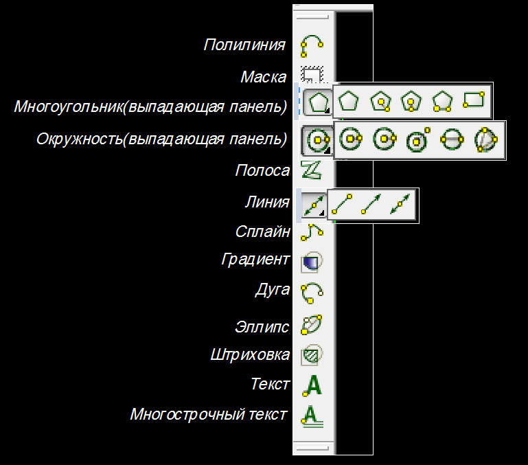
ПКМ по панели инструментов и выбираем в открывшемся меню пункт "Настроить"
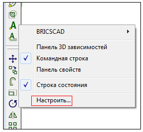
Выбираем закладку "Панели инструментов"
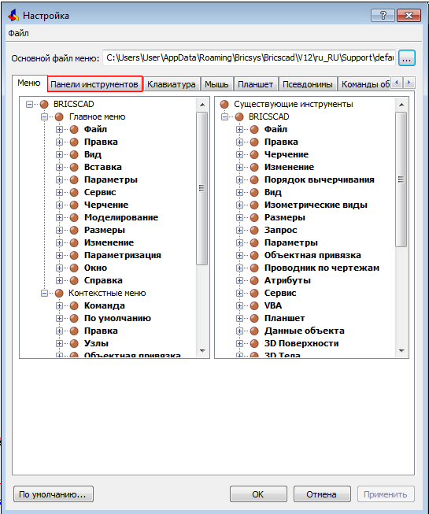
Находим нужную нам панель инструментов (в нашем случае "Черчение") и раскрываем её.
Там будет отображён весь список инструментов, которые присутствуют в данное время на панели
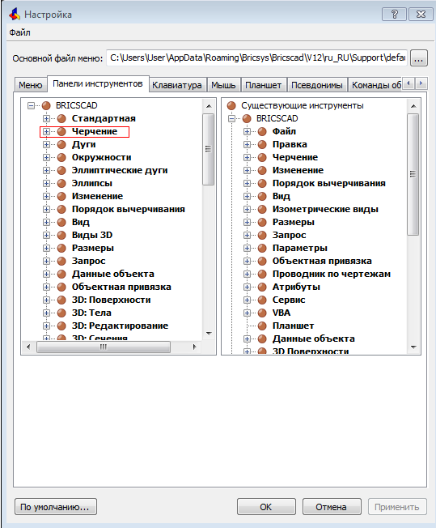
Удалим инструмент "Маска."
Сделам щелчок ПКМ по нему и выберем в раскрывшемся меню "Удалить"
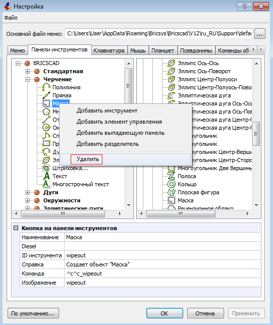
Удалим выпадающую панель "Многоугольник."
Сделам щелчок ПКМ по ней и выберем в раскрывшемся меню "Удалить выпадающую панель"
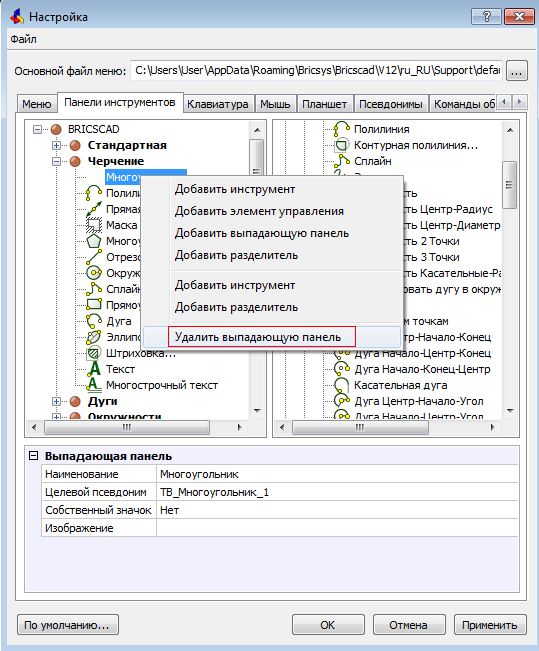
Теперь добавим инструмент "Прямоугольник."
Сделам щелчок ПКМ и выберем в раскрывшемся меню "Добавить инструмент"
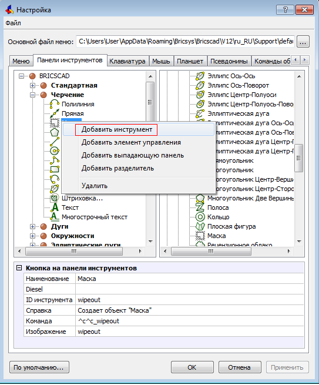
В открывшемся окне выберем "Добавить существующий инструмент"
и раскроем панель с существующими инструментами (в нашем случае "Черчение")
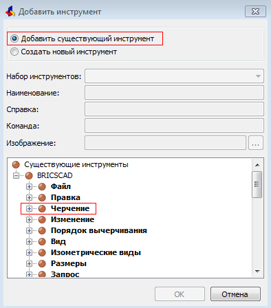
В раскрывшемся списке выберем "Прямоугольник" и нажмём "ОК"
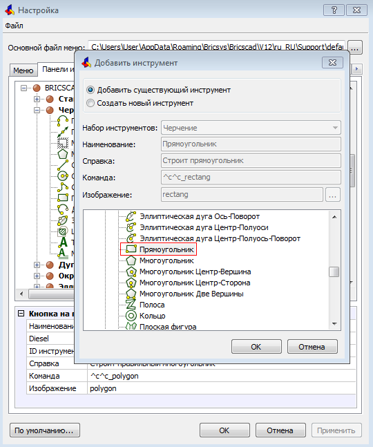
Теперь добавим выпадающую панель.
После щелчка ПКМ выберем в раскрывшемся меню
"Добавить выпадающую панель"
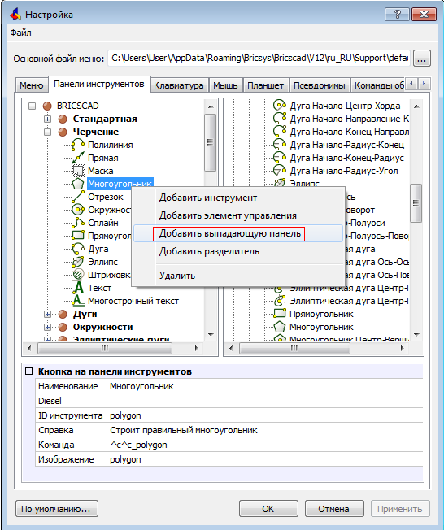
В открывшееся окно введём название необходимой нам раскрывающейся панели (например "Дуга") и нажмём "ОК"
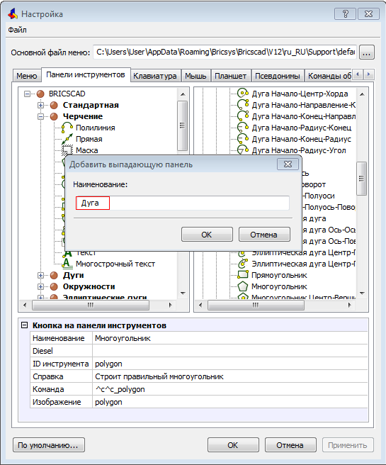
Щёлкнуть ПКМ по появившейся надписи "Дуга" и выбрать пункт "Добавить инструмент "
в нижней части открывшегося меню
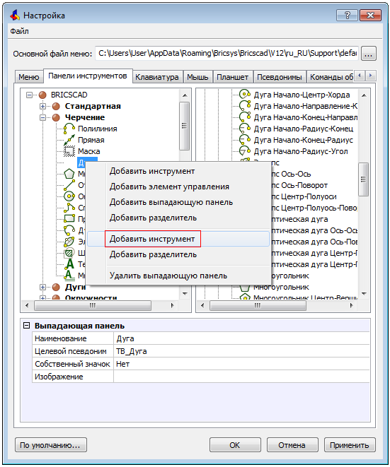
Затем последовательно выбираем и добавляем в раскрывающееся меню нужные нам инструменты.
По завершению нажать "ОК"
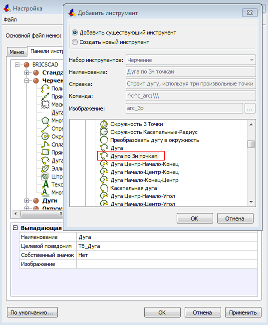